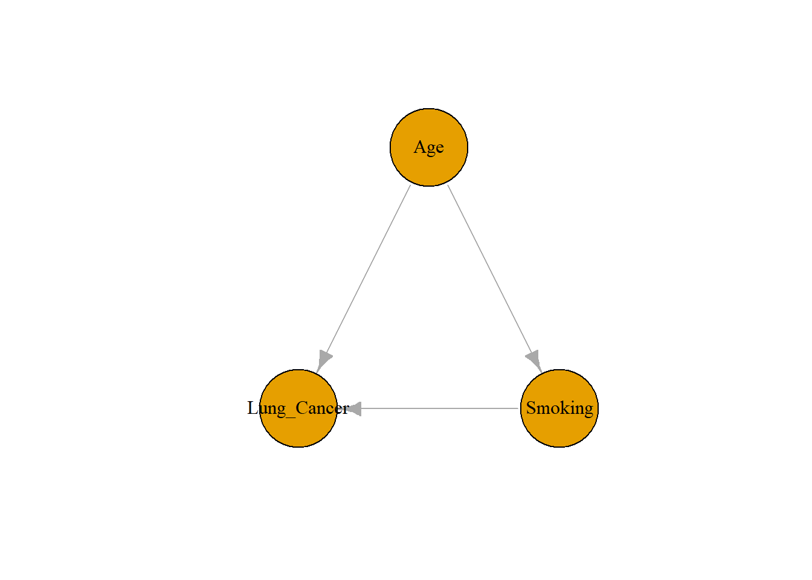

3 Bias and Identification
Class materials
Slides: Module 3
Recording: Module 3, Part 1
Recording: Module 3, Part 2
Textbook reading
Supplementary reading
Greenland, S. (2003). Quantifying biases in causal models: classical confounding vs collider-stratification bias. Epidemiology, 14(3), 300–306.
Additional DAG exercises provided in class
Topics covered
- Confounding bias and how it arises
- Collider bias and overcontrol
- Selection bias and missing data
- Identifiability of causal effects
- Using DAGs to reason about sources of bias
3.1 Confounding Bias and How It Arises
One of the most common challenges in causal inference is confounding bias — a distortion in the estimated treatment effect caused by a third variable that influences both the treatment and the outcome. Confounders create a false association between the treatment and the outcome, leading us to attribute effects to the treatment that are actually due to other underlying factors.
A compelling illustration of this is presented in the Simpson’s Paradox example from Week 1 (see Section 1.1), where patients with different levels of pneumonia severity were not equally distributed across treatment groups. While Treatment B was more effective within both the mild and severe subgroups, the overall data misleadingly suggested the opposite due to the imbalance in case severity. This paradox arises precisely because disease severity confounds the relationship between treatment and outcome — it influences both who gets which treatment and what their likely outcome is. This highlights the necessity of accounting for confounding variables when making causal claims and demonstrates how failing to do so can lead to entirely incorrect conclusions, even when the data appears clear at first glance.
3.2 Collider Bias and Overcontrol
Collider bias arises when we control for a variable that is caused by two (or more) other variables in our model — in other words, a collider. Unlike confounders, which distort causal relationships when not adjusted for, colliders create bias when we do adjust for them. By conditioning on a collider, we unintentionally open a backdoor path that allows non-causal associations to flow through the model. This can lead to misleading estimates and spurious relationships, even when the original variables were unrelated.
Overcontrol refers to the broader mistake of adjusting for variables that should not be adjusted for, including colliders and mediators (variables that lie on the causal path from treatment to outcome). While it may seem intuitive to include as many variables as possible in a regression model “just to be safe,” doing so without a clear causal understanding can introduce rather than reduce bias. For example, in a study of smoking and lung cancer, adjusting for a variable like shortness of breath — which can be influenced by both — may induce a collider bias and distort the relationship. These pitfalls emphasize the importance of using causal diagrams (DAGs) to think carefully about which variables to control for, and which to leave out.
3.3 Selection Bias and Missing Data
In addition to confounding, another major obstacle in causal inference is selection bias — which occurs when individuals self-select into treatment in a way that’s related to the outcome. This bias often arises in observational studies where treatment isn’t randomly assigned. For example, older or sicker individuals may be more likely to receive a treatment, and also more likely to have worse outcomes, regardless of the treatment’s effect. If we fail to account for these kinds of observable characteristics, our treatment effect estimates can be misleading.
This challenge is addressed through the selection on observables assumption: the idea that if we condition on enough observed covariates, we can remove bias and recover causal estimates. Selection on observables is a concept often used in situations where you are trying to estimate the treatment effect of an exposure (e.g., pollution) on an outcome (e.g., health). The selection process into treatment/exposure (e.g, whether someone is exposed to pollution or not) and the outcome (health) is influenced by observable characteristics (confounding variables) in the data set.
Selection on observables happens when the treatment/exposure is assigned based on a confounding variable (e.g., age). To estimate the casual effects of a treatment or exposure, you must understand how selection on observables works. To clarify, observables are variables that can be measured and observed in the data set, such as age and income.
In a typical scenario, you are trying to estimate the casual effect of a treatment/exposure on an outcome variable (e.g., health). You compare people who received the treatment and those who don’t. The challenge arises when the treatment/exposure is not randomly assigned. This can lead to bias, where the naive treatment effect is distorted because the group that receives the exposure and the group that receives the treatment differ on key characteristics. If we were to simply compare health outcomes between the people exposed to pollution and those who aren’t, without accounting for any confounding variables, the average treatment effect would be inaccurate.
The central assumption for selection on observables is that all relevant variables influencing the exposure and the outcome are measured and accounted for. Therefore, you can adjust for the selection bias and get an unbiased estimate of the casual treatment effect. To start, we need to isolate the effect of the treatment while adjusting for differences in the observable variables. If you include all of the relevant observables in the model, the treatment is basically assigned randomly within the variable groups. Then, the treatment effect can be measured without bias.
In the example below, we are trying to study the impact of pollution exposure on health. If we only observe the outcome, then the estimate might be skewed because the group of people who suffered from pollution is not similar to the group of people who did not suffer from pollution. Instead, because it is a simulation, I randomly assigned people into the pollution group or the non-pollution group, while taking into consideration their age group (young or old). Therefore, I was able to control for these differences between the two groups (exposed vs non-exposed). This allowed me to estimate the casual effect of the pollution exposure on health while adjusting for the age discrepancy, as we know that pollution will affect older people more than younger people.
After that, I pulled a sample of 1000 people out of the study and assigned 500 of them to be exposed to pollution and 500 of them not to be exposed. Within each treatment group, exactly half of them were in the young age group and the other half were in the old age group. Therefore, when I created the linear model, I did not need to confound on age because it was already accounted for. When I computed the average treatment effect, it was very similar to the average treatment effect from my first simulation.
I then decided to do something similar to the second sample. I pulled out 1000 people and half of them were exposed. This time, I did not confound on the age group (young or old). When I computed the average treatment effect, this time it was off from the average treatment effect from my first simulation. This shows that age is a confounding variable and that we must take it into consideration before computing for the average treatment effect, because the variability in age can affect the results.
Step 1: Simulate the Full Population Dataset
# Simulate data for 2,000 individuals, each with age group and pollution exposure
n <- 2000
age_group <- rbinom(n, 1, 0.6) # 60% are older adults
pollution <- rbinom(n, 1, ifelse(age_group == 1, 0.8, 0.2)) # Older adults more likely to be exposed to pollution
# Health outcome depends on both age and pollution, with some noise
health <- 80 - 15 * pollution - 25 * age_group + rnorm(n, 0, 5)
data <- data.frame(age_group, pollution, health)Step 2: Estimate ATE Using the Full Data (Adjusted)
# Linear regression adjusting for age group
model <- lm(health ~ pollution + age_group, data = data)
ate <- summary(model)$coefficients["pollution", "Estimate"]
# Print true ATE from the full population
print(paste("The average treatment effect for the 2000 observation units is", round(ate, 2)))## [1] "The average treatment effect for the 2000 observation units is -14.81"Step 3: Biased Subsample with Confounding
# Create unequal distribution: more older people in polluted group, more younger in non-polluted group
# Sample 100 young and 400 older from polluted group
polluted_young <- data[data$pollution == 1 & data$age_group == 0, ]
polluted_young <- polluted_young[sample(1:nrow(polluted_young), 100), ]
polluted_old <- data[data$pollution == 1 & data$age_group == 1, ]
polluted_old <- polluted_old[sample(1:nrow(polluted_old), 400), ]
polluted_sample <- rbind(polluted_young, polluted_old)
# Sample 400 young and 100 older from non-polluted group
non_polluted_young <- data[data$pollution == 0 & data$age_group == 0, ]
non_polluted_young <- non_polluted_young[sample(1:nrow(non_polluted_young), 400), ]
non_polluted_old <- data[data$pollution == 0 & data$age_group == 1, ]
non_polluted_old <- non_polluted_old[sample(1:nrow(non_polluted_old), 100), ]
non_polluted_sample <- rbind(non_polluted_young, non_polluted_old)
# Combine the two biased groups
combined_sample <- rbind(polluted_sample, non_polluted_sample)Step 4: ATE Estimation Without Adjusting for Confounding
# Model that ignores age group (confounder)
model_sample_bias <- lm(health ~ pollution, data = combined_sample)
ate_sample_bias <- summary(model_sample_bias)$coefficients["pollution", "Estimate"]
print(paste("The average treatment effect for the 1000 observation units is", round(ate_sample_bias, 2)))## [1] "The average treatment effect for the 1000 observation units is -29.55"Step 5: ATE Estimation Adjusted for Confounding
# Model that includes age group to adjust for confounding
model_sample <- lm(health ~ pollution + age_group, data = combined_sample)
ate_sample <- summary(model_sample)$coefficients["pollution", "Estimate"]
print(paste("The average treatment effect for the 1000 observation units is", round(ate_sample, 2)))## [1] "The average treatment effect for the 1000 observation units is -14.36"3.4 Identifiability of Causal Effects
Identifiability of Causal Effects Even when we define causal estimands like ATE, ATT, or ATC, the next critical question is: can we identify them from the data we observe? The concept of identifiability refers to whether a causal effect can be uniquely estimated from the observed data, given our assumptions. In randomized experiments, identification is straightforward because treatment assignment is independent of potential outcomes. But in observational studies, identifiability hinges on assumptions like no unmeasured confounding, consistency, and positivity.
If these assumptions don’t hold, even well-defined estimands can’t be reliably estimated. This issue becomes especially clear in the simulations shown back in the Week 1 tutorials, where identification of ATT or ATC depends heavily on how treatment is assigned and whether confounders are adjusted for. For a deeper dive into these estimands and how they’re calculated in practice, refer back to Week 1, Section 1.3.
3.5 Using DAGs to Reason About Sources of Bias
Directed Acyclic Graphs (DAGs) are powerful tools for visually representing assumptions about causal relationships. Rather than relying solely on statistical intuition, DAGs let us map out how variables relate to each other and help determine what needs to be controlled for and what shouldn’t be. By drawing arrows to indicate direct causal paths, we can detect backdoor paths, colliders, and mediators. This makes DAGs especially useful for identifying potential sources of bias like confounding and overcontrol.
DAGs don’t just help with visualizing relationships; they allow us to apply formal rules, like the backdoor criterion, to determine which variables need to be adjusted for in order to estimate causal effects correctly. For instance, a confounder opens a backdoor path and should be blocked by adjustment, while a collider opens a path when conditioned on and should be left alone. Once we’ve identified the appropriate adjustment set, we can estimate causal effects with greater confidence in their validity. We’ll use DAGs both to plan our analyses and to explain potential errors in real-world scenarios.
Example Setup Let’s say we want to study the effect of Exercise (X) on Heart Health (Y), but there’s a Genetic Factor (Z) that causes both Exercise and Heart Health. In this case, Z is a confounder, and we should adjust for it.
Now imagine we introduce a Health App Usage (C) variable, which is influenced by both Exercise and Heart Health. Here, C is a collider, and conditioning on it would create a spurious association between X and Y — even if none existed.
pacman::p_load("ggdag")
health_dagified <- dagify(
heart_health ~ genetics,
heart_health ~ exercise,
exercise ~ genetics,
health_app_usage ~ exercise,
health_app_usage ~ heart_health
)
ggdag(health_dagified)
1. Confounding Bias (Path: exercise ← genetics → heart_health)
- Genetics is a confounder because it influences both the treatment (exercise) and the outcome (heart_health)
- If we don’t adjust for genetics, we may mistakenly attribute the effect of genetics to exercise — leading to biased estimation of the causal effect of exercise on heart health
Solution: Adjust for genetics to block the backdoor path.
Here’s a quick code snippet:
This shows the bias with and without adjusting for the confounder (genetics).
n <- 2000
# Simulate data
genetics <- rnorm(n)
exercise <- 0.6 * genetics + rnorm(n)
heart_health <- 0.8 * exercise + 0.5 * genetics + rnorm(n)
df <- data.frame(heart_health, exercise, genetics)
# Model 1: No adjustment for genetics
model_naive <- lm(heart_health ~ exercise, data = df)
summary(model_naive)$coefficients["exercise", ]## Estimate Std. Error t value Pr(>|t|)
## 1.01641738 0.02049673 49.58923639 0.00000000# Model 2: Adjusted regression for genetics
model_adjusted <- lm(heart_health ~ exercise + genetics, data = df)
summary(model_adjusted)$coefficients["exercise", ]## Estimate Std. Error t value Pr(>|t|)
## 8.075163e-01 2.214339e-02 3.646759e+01 1.327977e-223This output shows that after adjusting for genetics, the estimated causal effect of exercise on heart health is approximately 0.79, which is close to the true effect (0.8). This confirms that adjusting for the confounder (genetics) produces an unbiased estimate.
2. Collider Bias (Path: exercise → health_app_usage ← heart_health)
- Health App Usage is a collider; it is affected by both exercise and heart_health.
- If we condition on or adjust for this collider, we open a path between exercise and heart_health that wouldn’t exist otherwise.
- This introduces spurious correlation between the two, even if there’s no actual causal effect. This is collider stratification bias.
- Do not adjust for health_app_usage. Leave colliders unconditioned.
n <- 2000
genetics <- rnorm(n)
exercise <- 0.6 * genetics + rnorm(n)
heart_health <- 0.8 * exercise + 0.5 * genetics + rnorm(n)
health_app_usage <- 0.7 * exercise + 0.7 * heart_health + rnorm(n)
# Model 1: Without Collider (Correct Model)
summary(lm(heart_health ~ exercise))##
## Call:
## lm(formula = heart_health ~ exercise)
##
## Residuals:
## Min 1Q Median 3Q Max
## -3.8337 -0.7760 -0.0077 0.7386 3.1452
##
## Coefficients:
## Estimate Std. Error t value Pr(>|t|)
## (Intercept) 0.01118 0.02431 0.46 0.646
## exercise 1.02103 0.02160 47.26 <2e-16 ***
## ---
## Signif. codes: 0 '***' 0.001 '**' 0.01 '*' 0.05 '.' 0.1 ' ' 1
##
## Residual standard error: 1.087 on 1998 degrees of freedom
## Multiple R-squared: 0.5278, Adjusted R-squared: 0.5276
## F-statistic: 2234 on 1 and 1998 DF, p-value: < 2.2e-16# Model 2: Including Collider (Incorrect Model)
summary(lm(heart_health ~ exercise + health_app_usage))##
## Call:
## lm(formula = heart_health ~ exercise + health_app_usage)
##
## Residuals:
## Min 1Q Median 3Q Max
## -2.94963 -0.58504 0.02185 0.60526 2.62263
##
## Coefficients:
## Estimate Std. Error t value Pr(>|t|)
## (Intercept) -0.01233 0.01952 -0.632 0.528
## exercise 0.30574 0.02763 11.066 <2e-16 ***
## health_app_usage 0.51022 0.01535 33.250 <2e-16 ***
## ---
## Signif. codes: 0 '***' 0.001 '**' 0.01 '*' 0.05 '.' 0.1 ' ' 1
##
## Residual standard error: 0.8723 on 1997 degrees of freedom
## Multiple R-squared: 0.6961, Adjusted R-squared: 0.6958
## F-statistic: 2287 on 2 and 1997 DF, p-value: < 2.2e-16Including the collider (health_app_usage) in the regression distorts the estimate of the effect of exercise on heart_health, biasing it downward from 1.0 to about 0.3. This demonstrates collider bias — conditioning on a variable influenced by both the treatment and the outcome can open an unwanted path, introducing bias into your causal effect estimate.